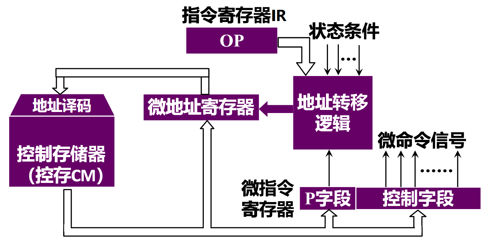
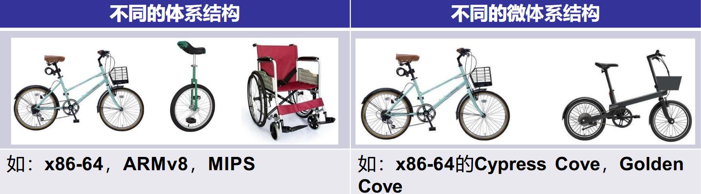
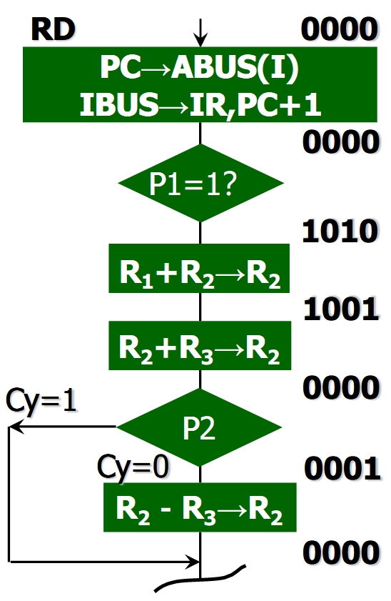
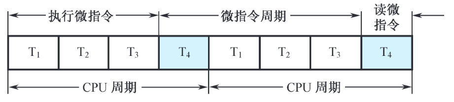
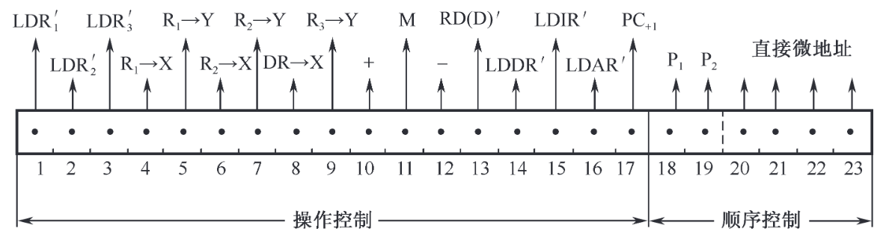
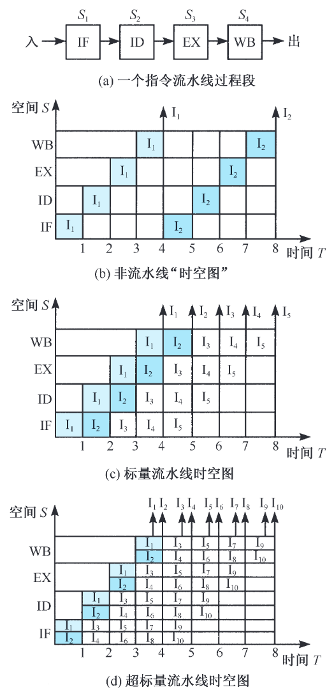
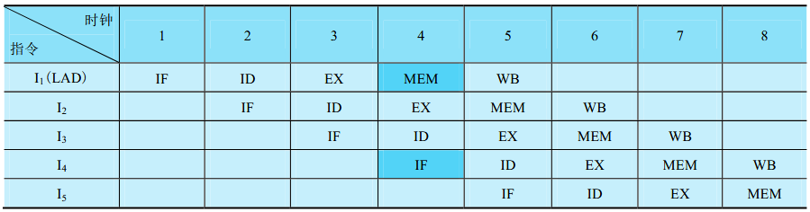

05 中央处理器
功能与组成
CPU 功能
- 指令控制：保证机器按顺序执行程序。
- 操作控制：CPU 管理并产生由内存取出的每条指令的操作信号，把操作信号送往相应的部件。
- 时间控制：各种指令的操作时间均受时间的严格定时。
- 数据加工：对数据进行运算。
CPU 组成
控制器
- “程序计数器”
- “指令寄存器”
- “指令译码器”
- “时序产生器”
- “操作控制器”
这些控制器的功能：
- 从指令 cache 种取出一条指令，并指出下一条指令在 cache 中的位置。
- 对指令进行译码和测试，产生对应的控制信号。
- 指挥数据的流动方向。
运算器
- “算术逻辑单元（ALU）”
- “通用寄存器”
- “数据缓冲寄存器（DR）”
- “程序状态寄存器（状态条件寄存器，PSWR）”
CPU 的主要寄存器
数据缓冲寄存器（DR）
- 作为 ALU 运算和通用寄存器之间的数据缓冲。
- 补偿 CPU 和内存、外围设备之间的操作速度上的差别。
指令寄存器（IR）
- 用来保存当前正在执行的一条指令。当执行一条指令时，先把它从“指令存储器”种读出，再送到指令寄存器。
程序计数器（PC）
- 在程序执行前，PC 指向·程序第一条指令的·指存地址。之后 CPU 自动修改 PC，以便使其保存的·总是·将要执行的下一条指令的地址。
数据地址寄存器（AR）
- 用来保存当前 CPU 所访问的数据存储器（简称数存）单元的地址。
通用寄存器
- 在我们的模型中，通用寄存器有 4 个（R0~R3）。
- 当算术逻辑单元(ALU)执行算术或逻辑运算时,为 ALU 提供一个工作区。
程序状态字寄存器（PSWR）
- 保存由“算术运算指令“和“逻辑运算指令运算”的各种条件代码，如：
- 运算结果进位标志（C）
- 运算结果溢出标志（V）
- 运算结果为零标志（Z）
- 运算结果为负标志（N）
- 这些标志位通常分别由 1 位触发器保存。
操作控制器与时序发生器
信息怎样才能在各寄存器之间传送呢？数据通路。
操作控制器分为两类：
- 硬布线控制器（组合逻辑控制器）
- 微程序控制器
指令周期
指的是取出一条指令，并执行这条指令的时间。
指令周期通常用若干CPU 周期数来表示。CPU 周期又称为机器周期。
CPU 周期又包含若干时钟周期，也叫脉冲周期。
- 单周期 CPU：在一个时钟周期内完成从指令取出到得到结果的所有工作。指令系统中所有指令执行时间都以最长时间的指令为准，因而效率低。
- 多周期 CPU：把指令的执行分成多个阶段。每个阶段在一个时钟周期内完成, 因而时钟周期短。
微程序控制器
微程序控制原理
微命令和微操作
- 微命令：控制部件通过控制线，向执行部件，发出的各种控制命令
- 微操作：执行部件接受微命令后所进行的操作
- 相容性微操作
- 相斥性微操作
微指令和微程序
- 微指令：一个 CPU 周期中，组实现一定操作功能的微命令的组合
- 微程序：由一组微指令构成
微程序构成框图

-
控制存储器：存放实现全部指令系统的微程序，它是一种只读型存储器。
- 微指令周期：读出并执行微指令的时间总和
-
微指令寄存器：用来存放由控制存储器读出的一条微指令信息。
- 微地址寄存器：下一条微指令的地址
- 微命令寄存器：保存一条微指令的操作控制字段，和判别测试字段的信息
-
地址转移逻辑：承担自动完成修改微地址的任务。通过判别测试字段 P 和执行部件的“状态条件”反馈信息，去修改微地址寄存器的内容。
微程序特点
- 一条机器指令对应着一段微程序，而微程序的总和便可实现整个的指令系统。
-
微程序设计可以很容易地在不同的微体系结构上实现相同的指令系统

微程序举例
-
画出十进制加法微程序流程图，由四条微指令组成：

CPU 周期与微指令周期的关系

机器指令与微指令的关系
- 前者与主存储器有关，后者与控制存储器有关
- 主存储器：存放系统程序与用户程序，容量很大
- 控制存储器：存放对应于机器指令系统的全部微程序，容量有限
微程序设计技术
微命令编码
-
直接表示法：每一位表示一个微命令

-
编码表示法：相斥性的微命令信号组成一个字段，然后通过字段的译码器，对每一个微命令信号进行译码，输出作为控制信号
-
混合表示法
微地址的形成方法
如何确定下一条微指令的地址。
- 计数器方式：
- 与程序计数器 PC 类似
- 在顺序执行微指令时，后继微地址由当前微地址加上一个增量来产生
- 在非顺序执行微指令时，必须通过转移方式，转去执行指定微地址的微指令
- 微地址寄存器通常可视为计数器，且顺序执行的微指令序列必须安排在控制存储器的连续单元中
- 特点：
- 微指令的顺序控制字段较短，微地址产生机构简单
- 但是多路并行转移功能较弱，速度较慢，灵活性较差
- 与程序计数器 PC 类似
- 多路转移方式：
- 当微程序出现分支时，有若干“候选”微地址可供选择。
- 按顺序控制字段中 P “判别测试”位和“状态条件”位，来选择其中一个微地址。
- 若“状态条件”有 n 位，可实现微程序 \(2^n\) 路转移，且涉及微地址寄存器的 n 位。
微指令格式
TODO
- 水平
- 垂直
硬布线控制器
RISC 处理器采用硬布线控制。TODO
流水线
原理

- IF (Instruction Fetch 取指)：从存储器取指令
- ID (Instruction Decode 指令译码)：指令译码、读寄存器
- EX (Execution 执行)：执行指令或计算地址
- MEM (Memory)：访问存储器
- WB (Write Back 写回)：结果写回寄存器
性能指标
- 加速比：
\[
S =\frac {T_0} {T_k} = \frac {n \cdot k \cdot \tau} {(n+k-1) \tau}
\]
- 吞吐率：
\[
TP = \frac {n} {T_k} = \frac {n} {(n+k-1) \tau}
\]
- 最大吞吐率：
\[
TP_{\max} = \lim _{n \rightarrow \infty} \frac {n} {(n+k-1) \tau} = \frac 1 \tau
\]
三种流水线冒险
结构冒险（资源相关）
流水线中两条指令同时试图使用同一资源。

解决办法：
- 暂停一个时钟
- 增设一个存储器，讲数据和指令放在不同存储器中
数据冒险（数据相关）
一条指令的执行，依赖于更早的一条还在流水线指令的执行结果。
-
写后读相关（RAW）：指令 j 的执行需要使用指令 i 的计算结果，但指令 j 可能在指令 i 写入计算结果之前，就先进行了读操作。
-
读后写相关（WAR）：指令 j 可能在指令 i 读取某个源操作数之前就进行了写操作。
-
写后写相关（WAW）：指令 j 和指令 i 的目标操作数相同，指令 j 可能在指令 i 写入计算结果之前就先行保存计算结果，导致写入顺序错误。
解决办法：
-
编译器通过指令调度来消除流水线暂停
-
由硬件动态调整指令执行顺序以减少暂停的影响
- 旁路